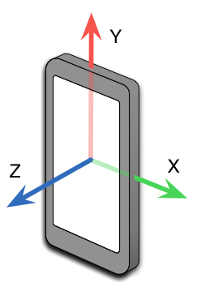
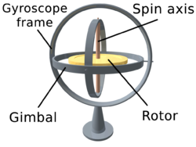
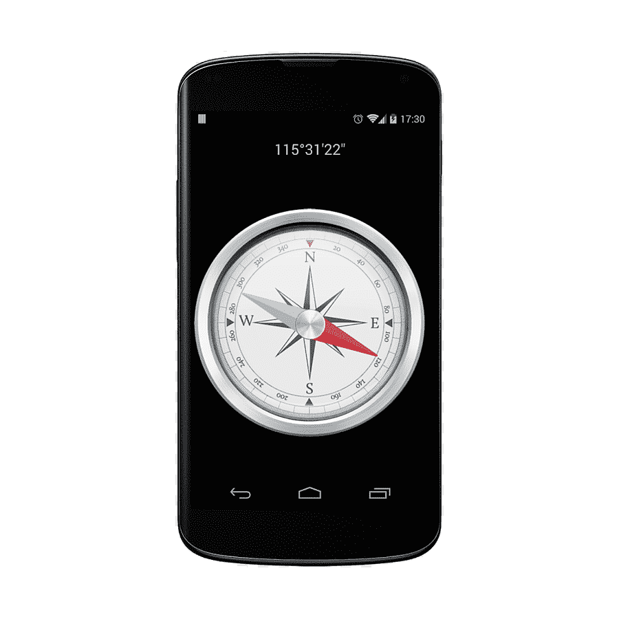
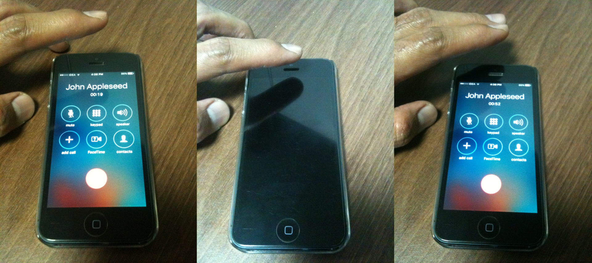
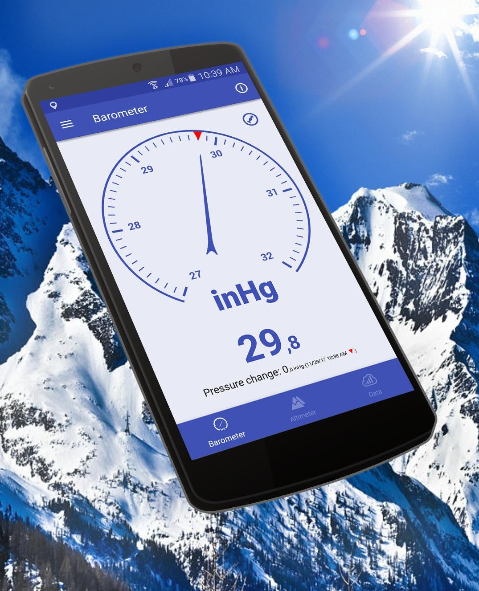
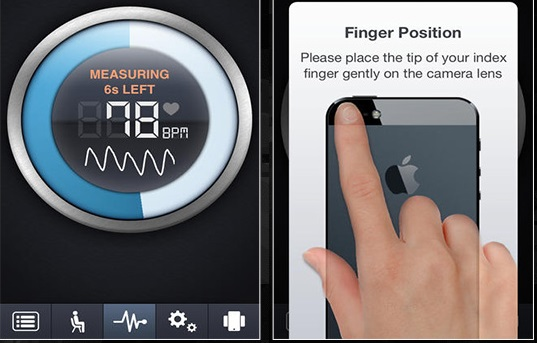
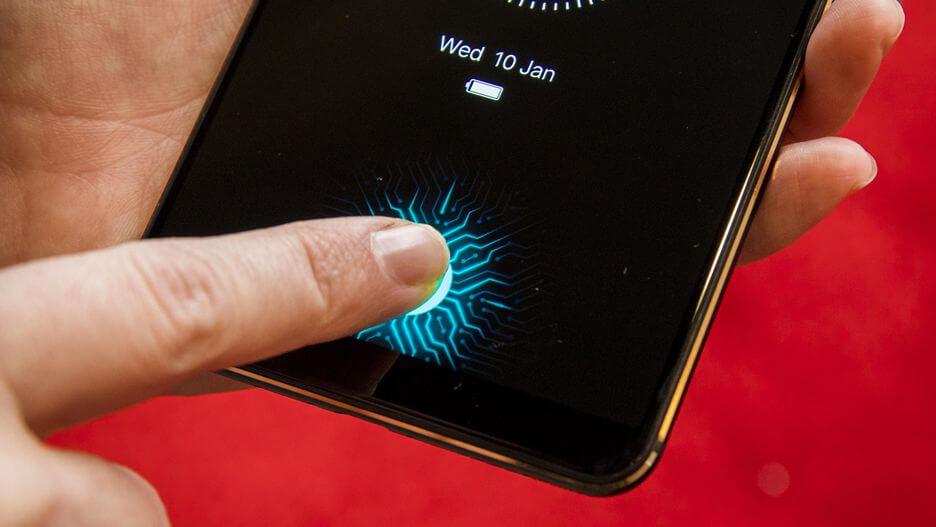
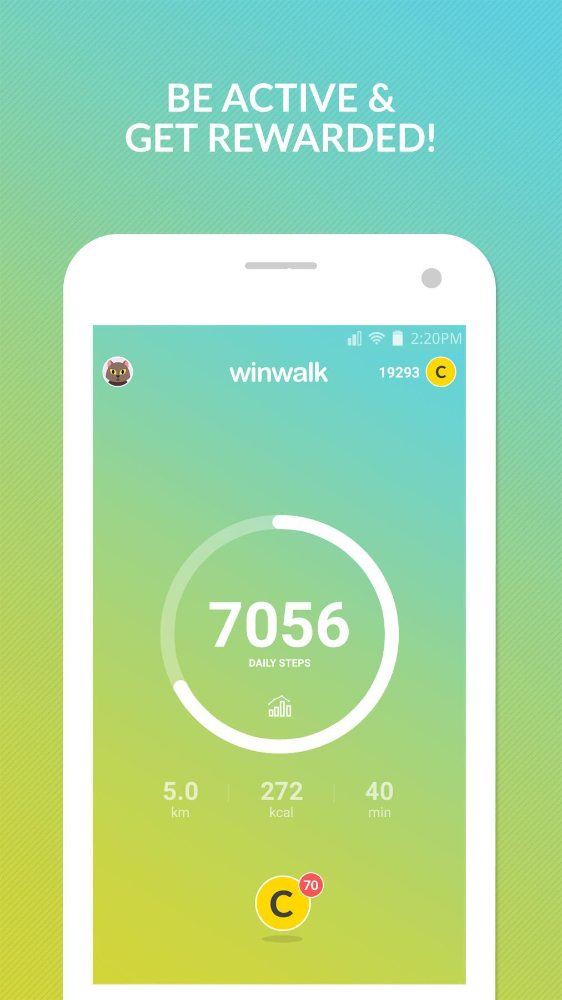
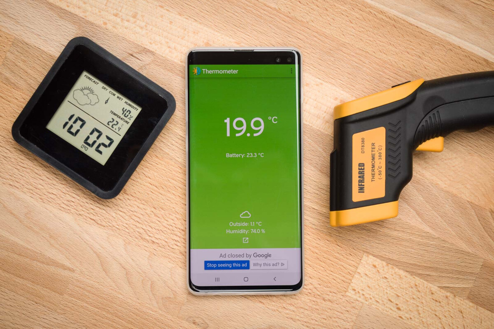

An accelerometer detects acceleration, vibration, and tilt to determine movement and exact orientation along the three axes. Apps use this smartphone sensor to determine whether your phone is in portrait or landscape orientation.
It can also tell if your phone screen is facing upward or downward. The accelerometer can also detect how fast your phone is moving in any linear direction.
Gyroscope also provides orientation details and direction like up/down and left/right but with greater precision like how much the device is tilted. This is where it differs from accelerometer — gyroscope can measure rotation too but the former cannot.
So it can tell how much a smartphone has been rotated and in which direction. Popular apps like Pokemon Go and Google Sky Map use gyroscope sensor to determine the direction towards which our phone is pointed.
Our smartphones are equipped with magnetometer which we commonly recognize as a compass. It can detect magnetic fields, so the compass app in phones uses this smartphone sensor to point at the planet’s north pole.
Whenever you open Google Maps or Apple Maps, the magnetometer is fired up to determine which way the map should be. This sensor can detect metal very well, so it is used in metal detector apps too.
In a phone, proximity sensor is used to turn off the touch screen, while making a call with phone positioned close to the ear. You can test this by making a call and placing hand/object close to the speaker at the top, screen will turn off. This is done to avoid accidental touch while making a call.
There are many high-end Android phones like Pixel and iPhones that include a barometer in their hardware. The barometer measures the air pressure, so it is quite useful in detecting weather changes and in calculating the altitude you’re at.
Next up is the heart rate sensor that measures heartbeat with the help of LED and optical sensors. The LED emits light towards the skin, and this smartphone sensor looks for the light waves reflected by it.
There is a difference in the light intensity when there is a pulse. The heartbeat is measured by counting the changes in light intensity between the minute pulsations of the blood vessels. Many fitness and health apps use this method to calculate the heart rate.
Gone are the days of memorizing passwords and patterns to unlock your phone as many users prefer using the fingerprint scanner these days. Fingerprint sensor enables biometric verification to secure many smartphones today. It is a capacitive scanner that records your fingerprint electrically.
When you put your finger on its surface, the ridges in your fingerprints touch the surface whereas the hollows between the ridges have a slight separation. In short, it measures the varying distances and pattern between the ridges on the surface of your finger. This smartphone sensor is quite useful in apps that require authentication such as mobile payment apps.
The pedometer is used for counting steps, and fitness tracker makes use of this sensor to count the number of steps you take. Pedometers generally use the values generated by the accelerometer to monitor your movements like running or walking.
Most of the smartphones have barcode sensors that can read a barcode by detecting the reflected light from the code. It generates an analog signal with varying voltage that represents the barcode. This analog signal is then converted to a digital one and finally decoded to reveal the information in it. Barcode sensors are useful in scanning the barcodes products or QR codes.
Every smartphone comes with an inbuilt thermometer for monitoring the temperature inside the device and battery. In case a component starts overheating, the system shuts down itself to prevent any damage.
Some handsets come with additional thermometers to measure ambient temperature. If you can recall, the Samsung Galaxy S4 bragged of thermometer that can measure temperature. Such thermometer sensors can be used by apps to detect your room temperature.
